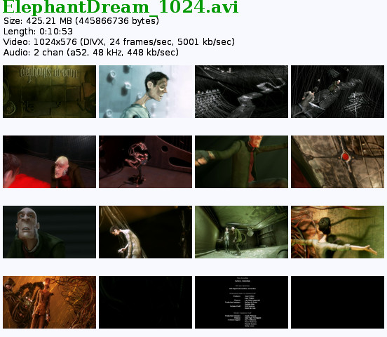

dhyana.pl
Dieser Artikel wurde für die folgenden Ubuntu-Versionen getestet:
Dieser Artikel ist mit keiner aktuell unterstützten Ubuntu-Version getestet! Bitte diesen Artikel testen und das getestet-Tag entsprechend anpassen.
Zum Verständnis dieses Artikels sind folgende Seiten hilfreich:
dhyana.pl  ist ein kleines in Perl
ist ein kleines in Perl  geschriebenes Skript, das aus einem Film mittels MPlayer und ImageMagick eine Vorschau erstellt. Dabei werden Einzelbilder in regelmäßigen Abständen gespeichert und dann anschließend im Vorschaubild mit einer Reihe statistischer Informationen eingefügt.
geschriebenes Skript, das aus einem Film mittels MPlayer und ImageMagick eine Vorschau erstellt. Dabei werden Einzelbilder in regelmäßigen Abständen gespeichert und dann anschließend im Vorschaubild mit einer Reihe statistischer Informationen eingefügt.
Beispiel¶

Installation¶
Das Skript befindet sich nicht in den Paketquellen von Ubuntu. Man muss es selber herunterladen und an geeigneter Stelle ablegen. Alle benötigten Abhängigkeiten lassen sich jedoch bequem über die Paketverwaltung installieren.
Skript¶
Das Skript muss von der Homepage heruntergeladen werden. Allerdings müssen für Ubuntu eine Reihe von Pfaden angepasst werden, deshalb ist hier im Wiki eine angepasste Version  (auf Basis der letzten Version dhyana.pl 0.3) für Ubuntu angehängt. Diese Version kann einfach heruntergeladen, an die richtige Stelle geschoben
(auf Basis der letzten Version dhyana.pl 0.3) für Ubuntu angehängt. Diese Version kann einfach heruntergeladen, an die richtige Stelle geschoben
sudo mv dhyana-uu.de_mod-0.3.pl /usr/local/bin/dhyana.pl
und ausführbar
sudo chmod +x /usr/local/bin/dhyana.pl
gemacht werden.
Abhängigkeiten¶
Folgende Pakete müssen installiert [1] werden, damit das Skript vollständig laufen kann.
libgetopt-argvfile-perl (universe )
libfile-chdir-perl (universe )
mplayer (universe )
imagemagick
ffmpeg
ttf-freefont
 mit apturl
mit apturl
Paketliste zum Kopieren:
sudo apt-get install libgetopt-argvfile-perl libfile-chdir-perl mplayer imagemagick ffmpeg ttf-freefont
sudo aptitude install libgetopt-argvfile-perl libfile-chdir-perl mplayer imagemagick ffmpeg ttf-freefont
Benutzung¶
Allgemein¶
Das Programm wird über ein Terminal [3] bedient. Die allgemeine Syntax lautet
dhyana.pl [optionen] beispiel.avi [reihen [spalten [geometrie [titel]]]] dhyana.pl --multi [optionen] beispiel1.avi [beispiel2.avi ...]
Der einfachste Aufruf von dhyana.pl besteht darin das Programm ohne Optionen aufzurufen und nur die Filmdatei zu übergeben.
dhyana.pl /pfad/zu/beispiel.avi
Das Ergebnisbild wird dabei in das Verzeichnis des Filmes geschrieben. Weitere Optionen sind:
| Optionen von dhyana.pl | |
| Option | Beschreibung |
-c oder --cols= | Anzahl der Spalten (Standard sind 4) |
-r oder --rows= | Anzahl der Reihen (Standard sind 4) |
-g oder --geometry= | Geometrie der Einzelbilder im Format HÖHExBREITE+ABSTANDLINKSRECHTS+ABSTANDOBENUNTEN |
-t oder --title= | Titel (Standard ist der Dateiname des Films) |
-C oder --capture-mode= | dhyana.pl ruft eine Reihe verschiedener externer Programme auf, um die Vorschaubilder zu erzeugen. Die Standardeinstellung "auto" ruft das üblicherweise beste Programm automatisch auf. |
--background | Hintergrundfarbe (bspw. 'green', '#00ff00') |
--font-family | Pfad zu einem TTF-Font für den Text im Bild |
--font-size | Größe der Schrift im Bild |
--colour, --color | Schriftfarbe für Text |
--heading-font-family | Pfad zu einem TTF-Font für den Titel |
--heading-font-size | Größe der Schrift im Titel |
--heading-colour | Schriftfarbe für Titel |
Für eine vollständige Liste und Erklärung aller Optionen kann man das Skript mit der Option eine man-Page anzuzeigen aufrufen:
dhyana.pl --man
Deinstallation¶
Da dhyana.pl nur aus einer Datei besteht muss zur Deinstallation nur das Skript gelöscht werden.
sudo rm /usr/local/sbin/dhyana.pl
- Erstellt mit Inyoka
-
 2004 – 2017 ubuntuusers.de • Einige Rechte vorbehalten
2004 – 2017 ubuntuusers.de • Einige Rechte vorbehalten
Lizenz • Kontakt • Datenschutz • Impressum • Serverstatus -
Serverhousing gespendet von